File: 000420.gt.txt (if the image is defective, simply delete all Arabic text and the line will be excluded)
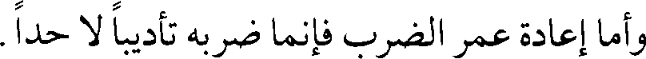
وأما إعادة عمر الضرب فإنما ضربه تأديبا لا حدا.
File: 000421.gt.txt (if the image is defective, simply delete all Arabic text and the line will be excluded)
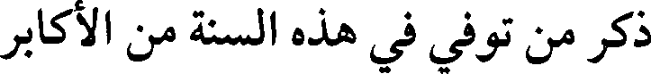
ذكر من توفي في هذه السنة من الأكابر
File: 000422.gt.txt (if the image is defective, simply delete all Arabic text and the line will be excluded)
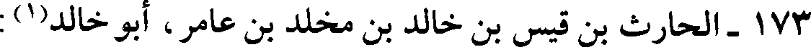
173 -الحارث بن قيس بن خالد بن مخلد بن عامر، أبو خالد(1) :
File: 000423.gt.txt (if the image is defective, simply delete all Arabic text and the line will be excluded)
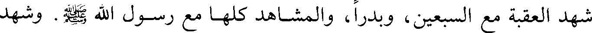
شهد العقبة مع السبعين، وبدرا، والمشاهد كلها مع رسول الله صلعم. وشهد
File: 000424.gt.txt (if the image is defective, simply delete all Arabic text and the line will be excluded)
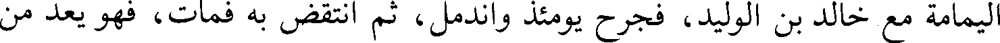
اليمامة مع خالد بن الوليد، فجرح يومئذ واندمل، ثم انتقض به فمات، فهو يعد من
File: 000425.gt.txt (if the image is defective, simply delete all Arabic text and the line will be excluded)
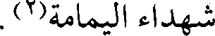
شهداء اليمامة(2).
File: 000426.gt.txt (if the image is defective, simply delete all Arabic text and the line will be excluded)
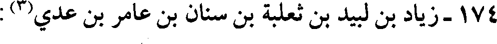
174 -زياد بن لبيد بن ثعلبة بن سنان بن عامر بن عدي(3) :
File: 000427.gt.txt (if the image is defective, simply delete all Arabic text and the line will be excluded)
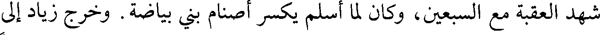
شهد العقبة مع السبعين، وكان لما أسلم يكسر أصنام بني بياضة. وخرج زياد إلى
File: 000428.gt.txt (if the image is defective, simply delete all Arabic text and the line will be excluded)
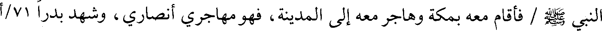
النبي صلعم / فأقام معه بمكة وهاجر معه إلى المدينة، فهو مهاجري أنصاري، وشهد بدرا 71/أ
File: 000429.gt.txt (if the image is defective, simply delete all Arabic text and the line will be excluded)
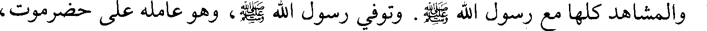
والمشاهد كلها مع رسول الله صلعم. وتوفي رسول الله صلعم، وهو عامله على حضرموت،
File: 000430.gt.txt (if the image is defective, simply delete all Arabic text and the line will be excluded)
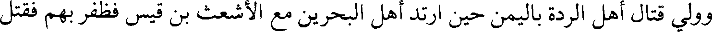
وولي قتال أهل الردة باليمن حين ارتد أهل البحرين مع الأشعث بن قيس فظفر بهم فقتل
File: 000431.gt.txt (if the image is defective, simply delete all Arabic text and the line will be excluded)
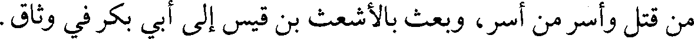
من قتل وأسر من أسر، وبعث بالأشعث بن قيس إلى أبي بكر في وثاق.
File: 000432.gt.txt (if the image is defective, simply delete all Arabic text and the line will be excluded)
175-[سلمة بن أسلم(4):
File: 000433.gt.txt (if the image is defective, simply delete all Arabic text and the line will be excluded)
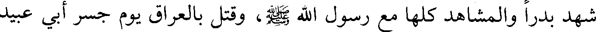
شهد بدرا والمشاهد كلها مع رسول الله صلعم، وقتل بالعراق يوم جسر أبي عبيد
File: 000434.gt.txt (if the image is defective, simply delete all Arabic text and the line will be excluded)
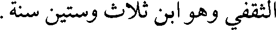
الثقفي وهو ابن ثلاث وستين سنة.
File: 000435.gt.txt (if the image is defective, simply delete all Arabic text and the line will be excluded)
File: 000436.gt.txt (if the image is defective, simply delete all Arabic text and the line will be excluded)
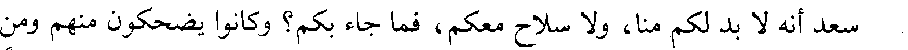
سعد أنه لا بد لكم منا، ولا سلاح معكم، فما جاء بكم؟ وكانوا يضحكون منهم ومن
File: 000437.gt.txt (if the image is defective, simply delete all Arabic text and the line will be excluded)
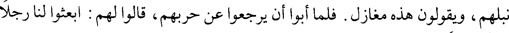
نبلهم، ويقولون هذه مغازل. فلما أبوا أن يرجعوا عن حربهم، قالوا لهم : ابعثوا لنا رجلا
File: 000438.gt.txt (if the image is defective, simply delete all Arabic text and the line will be excluded)
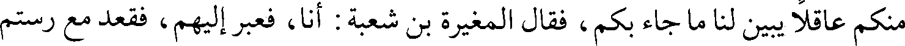
منكم عاقلا يبين لنا ما جاء بكم، فقال المغيرة بن شعبة : أنا، فعبر إليهم، فقعد مع رستم
File: 000439.gt.txt (if the image is defective, simply delete all Arabic text and the line will be excluded)
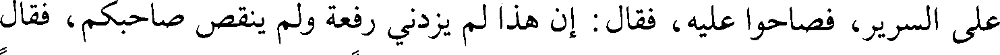
على السرير، فصاحوا عليه، فقال : إن هذا لم يزدني رفعة ولم ينقص صاحبكم، فقال
File: 000440.gt.txt (if the image is defective, simply delete all Arabic text and the line will be excluded)
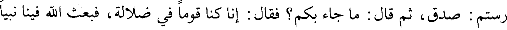
رستم : صدق، ثم قال : ما جاء بكم؟ فقال : إنا كنا قوما في ضلالة، فبعث الله فينا نبيا
File: 000441.gt.txt (if the image is defective, simply delete all Arabic text and the line will be excluded)
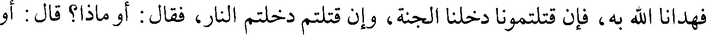
فهدانا الله به، فإن قتلتمونا دخلنا الجنة، وإن قتلتم دخلتم النار، فقال : أو ماذا؟ قال : أو
File: 000442.gt.txt (if the image is defective, simply delete all Arabic text and the line will be excluded)
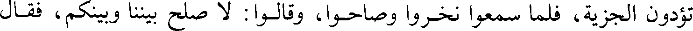
تؤدون الجزية، فلما سمعوا نخروا وصاحوا، وقالوا : لا صلح بيننا وبينكم، فقال
File: 000443.gt.txt (if the image is defective, simply delete all Arabic text and the line will be excluded)
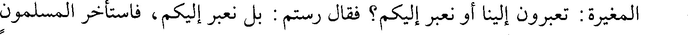
المغيرة : تعبرون إلينا أو نعبر إليكم؟ فقال رستم : بل نعبر إليكم، فاستأخر المسلمون
File: 000444.gt.txt (if the image is defective, simply delete all Arabic text and the line will be excluded)
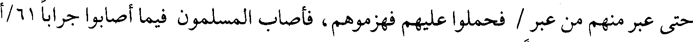
حتى عبر منهم من عبر / فحملوا عليهم فهزموهم، فأصاب المسلمون فيما أصابوا جرابا 61/أ
File: 000445.gt.txt (if the image is defective, simply delete all Arabic text and the line will be excluded)
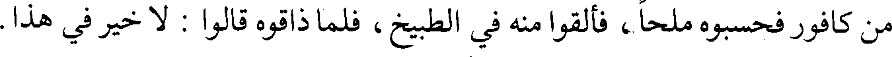
من كافور فحسبوه ملحا، فألقوا منه في الطبيخ، فلما ذاقوه قالوا : لا خير في هذا.
File: 000446.gt.txt (if the image is defective, simply delete all Arabic text and the line will be excluded)
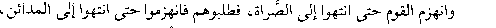
وانهزم القوم حتى انتهوا إلى الصراة، فطلبوهم فانهزموا حتى انتهوا إلى المدائن،
File: 000447.gt.txt (if the image is defective, simply delete all Arabic text and the line will be excluded)
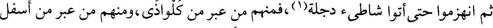
ثم انهزموا حتى أتوا شاطئ دجلة(1)، فمنهم من عبر من كلواذى، ومنهم من عبر من أسفل
File: 000448.gt.txt (if the image is defective, simply delete all Arabic text and the line will be excluded)
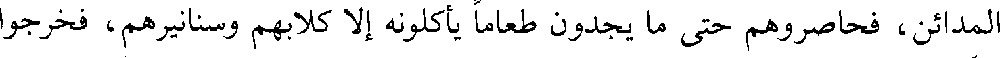
المدائن، فحاصروهم حتى ما يجدون طعاما يأكلونه إلا كلابهم وسنانيرهم، فخرجوا
File: 000449.gt.txt (if the image is defective, simply delete all Arabic text and the line will be excluded)
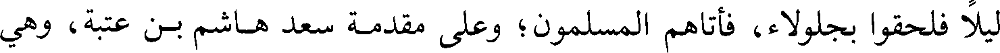
ليلا فلحقوا بجلولاء، فأتاهم المسلمون؛ وعلى مقدمة سعد هاشم بن عتبة، وهي
To Save: `Ctrl+s`, make sure to choose `Webpage, complete`!